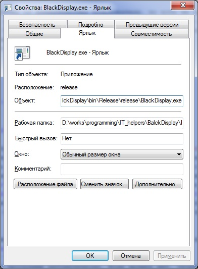
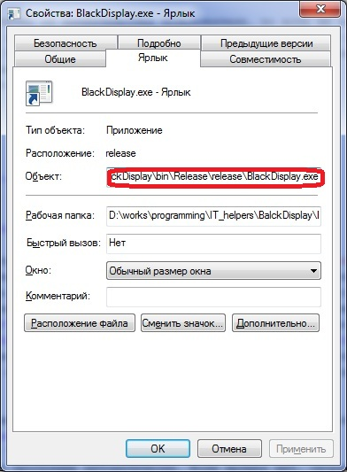
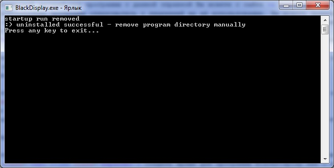

Cправочная система программы напоминания о времени отдыха
Программа RTBD (relax time black display) предназначена для напоминания пользователю о необходимости отдыха при работе за компьютером.
Чего не делает программа?
- Для работы программы требуется установленная Microsoft .NET Framework 4.0 или совместимой с ней (более высокой) версии [весит около 50 Мб].
- При первом запуске программа регистрирует себя в качестве программы, запускающейся при старте системы.
- Программа отсчитывает время пользователя, проведённое за работой за компьютером.
- При истечении наперёд заданного интервала времени программа напоминает пользователю, что пора отдохнуть (непрерывная работа за компьютером вредна).
- Если пользователь соглашается, программа закрашивает экран в чёрный цвет.
- Когда время отдыха истекло, на экране появляется соответствующее сообщение.
- В зависимости от настроек, при нажатии пользователем клавиши Esc программа даёт пользователю продолжить работу или в целях безопасности блокирует компьютер, требуя ввода пароля пользователя.
Чего не делает программа?
- Она не защищает лог-файл или файл настроек от вмешательства пользователя, то есть не предназначена для контроля за временем работы пользователя
- Она ничего не запрещает пользователю: он может отключить программу совсем или в любой выйти из режима отдыха
- Хотя программа понимает, что во время блокировки компьютера (когда система ждёт ввод пароля пользователя) пользователь не работает, в другие моменты времени, даже если пользователь бездействует и на экране работает заставка - программа считает, что пользователь работает
- Не умеет выводить что-либо, кроме чёрного экрана
- Не шпионит за пользователем, не выдаёт ему рекламу и т.п.
- Скачать последний дистрибутив программы с данной справкой Вы можете с сайта relaxtime.8vs.ru.
- Перед использованием программы ознакомьтесь с лицензией на её использование. Вы можете применять программу только если полностью поняли и согласны с условиями лицензии.
- Создайте папку, где будет работать ваша программа, и распакуйте туда дистрибутив с помощью любого архиватора, например WinRar.
- Запустите программу BlackDisplay.exe из папки, куда вы распаковали содержимое архива
Если программа выдаёт ошибку, значит у вас не установлена нужная версия .NET Framework.
Её можно скачать с сайта Microsoft. На момент написания справки файл установки весил около 50 Мб. По-умолчанию предлагается скачать установщик, который уже скачает сам файл. По ссылке внизу страницы скачивания с надписью ".NET Framework 4 (автономный установщик)" можно скачать и сразу сам установочный файл.
Без установки .NET использование программы невозможно. Если вы не хотите скачивать файл, просто удалите созданную вами директорию. - Во время первого запуска программа сама зарегистрирует себя как запускаемая при старте системы
- Запустив программу вы увидите в панели задач (обычно справа внизу экрана, рядом с часами) новую иконку
- Если нужно удалить программу:
- запустите в директории программы файл-ярлык с названием uninstall.exe (в зависимости от операционной системы он может называться uninstall.exe.lnk или uninstall).
Возможные осложнения:
Ярлык создаётся при первом запуске программы автоматически. Если ярлыка нет, скорее всего, это означает, что программа не запускалась или не зарегистрировала себя.
Можно попробовать один из следующих вариантов:- Запустить программу BlackDisplay.exe, а затем выйти из неё. Если ярлык uninstall.exe появился - запустить его и выполнять дальнейшие действия по удалению программы в штатном режиме.
Создать ярлык для программы BlackDisplay.exe с параметром uninstall.
- В папке с программой на файле BlackDisplay.exe нажмите правой кнопкой мыши
- В появившемся контекстном меню выберите пункт меню "Создать ярлык" (щёлкнуть на соответствующем пункте левой кнопкой мышки)
- Теперь в той же папке должен появится файл-ярлык с именем, аналогичным "BlackDisplay.exe - Ярлык"
- Щёлкните по нему правой кнопкой мыши и в появившемся контекстном меню одиночным щелчком левой кнопки мыши выберите пункт "Свойства"
- Должно появится окно с заголовком, аналогичным "Свойства: BlackDisplay.exe - Ярлык" и активной вкладкой "ярлык"
- Нажмите левой кнопкой мыши по полю ввода, расположенному правее надписи "Объект"
- Нажмите на клавиатуре кнопку "End" (обычно она расположена правее клавиши Enter и над клавишами со стрелками)
- Нажмите пробел и введите слово "uninstall" (без кавычек).
- Нажмите кнопку "OK"
- Запустите ярлык (в зависимости от настроек вашей системы это один или два клика мышкой по ярлыку)
- На экран должно выдаться сообщение, аналогичное описанному ниже при штатном запуске ярлыка uninstall.exe
- Продолжайте следовать инструкциям штатного удаления программы
- Программа регистрируется на запуск в момет старта операционной системы в разделе системного реестра
HKEY_CURRENT_USER\Software\Microsoft\Windows\CurrentVersion\Run
с именем записи "Relax Time Black Display".
Используя программу regedit, входящую в поставку ОС Windows, вы можете удалить запись реестра по данному пути с именем "Relax Time Black Display". После чего продолжить штатное удаление без выполнения пункта запуска uninstall.exe
- На экране появится окно, похожее на
Надпись во второй строке ":) uninstalled successful" говорит об успешном удалении регистрационной информации
Нажмите любую клавишу в этом окне или просто закройте его. - Выйдя из данной справки, удалите директорию программы со всем содержимым. После этого программа, в том числе справка, будет полностью удалена с вашего компьютера
- запустите в директории программы файл-ярлык с названием uninstall.exe (в зависимости от операционной системы он может называться uninstall.exe.lnk или uninstall).